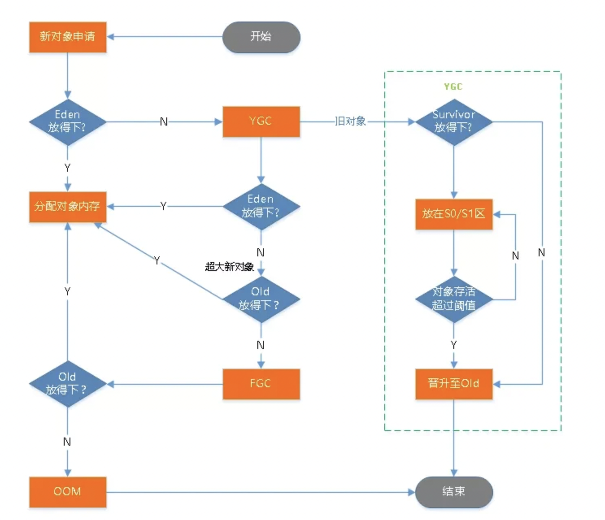

垃圾回收  Figure 1. GC 的主要过程，出自阿里《码出高效-Java 开发手册》 Minor GC v.s. Major GC v.s. Full GC Chapter 3-4. GC - Basics - JMM, Java Concurrency and JVM GC 算法 标记 - 清除算法（Mark-Sweep） 复制算法（Coping） 标记整理算法（Mark-Compact） 标记 - 清除算法（Mark-Sweep） STW 停顿（Stop The World pause，全线暂停），让应用程序暂时停止，让 JVM 进行内存清理工作。 复制算法（Coping） 标记整理算法（Mark-Compact） Summary Mark-Sweep: 通常用於 tenured generation Copying: 通常用於 young generation Mark-Compact:通常用於 tenured generation 垃圾收集器 Java 8 版本的 Hotspot JVM，默认情况下使用的是并行垃圾收集器（Parallel GC）。其他厂商提供的 JDK 8 基本上也默认使用并行垃圾收集器。 Java 9 之后，官方 JDK 默认使用的垃圾收集器是 G1。 JVM 启动参数 JDK 内置命令行工具